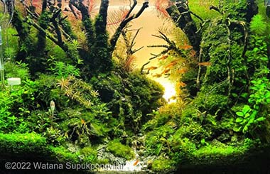
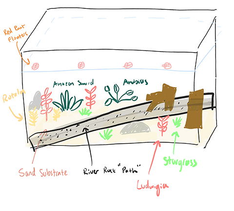
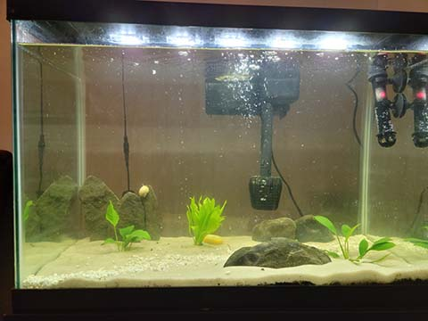
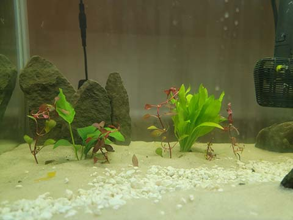
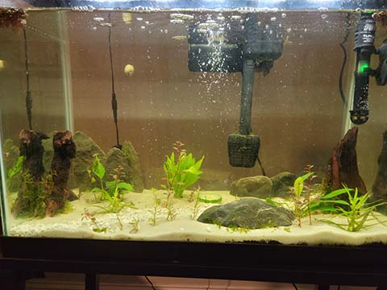
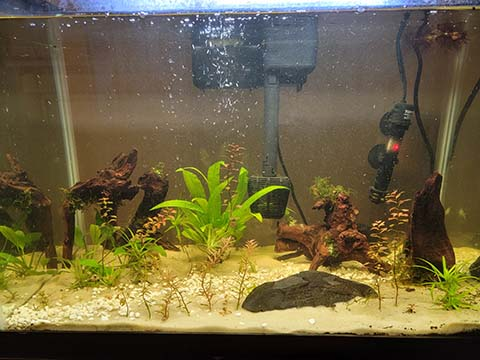
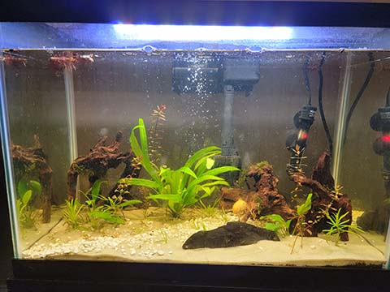

Main Materials
- 20 gallon long tank
- 80w LED light strip
- White sugar sand substrate
- Driftwood
- Shale stones
I originally found the idea of a planted tank from owning an aquarium when I was younger. I heard of the Walstad Method and by extension a dirted and planted tank. With recent use of YouTube shorts, I also found an abundance of content showing off planted tanks. When I was researching how I could potentially create a planted tank, I found a great page with pictures from an aquascaping contest here
My initial vision was a fall-themed tank with an assortment of red, yellow, and green plants. This would be accompanied by red and orange critters.

First, I searched for a local fish store (LFS) in Ithaca.
Unfortunately, the closest ones were in Binghamton or Syracuse, which I wasn't willing to drive to.
I turned to online alternatives first, opting to buy plants from local etsy users around the world.
For the tank, I knew that I wanted to purchase second-hand, so I was able to find this on Facebook marketplace.
I also purchased the driftwood from an online retailer and found the shale stones from a gorge near my apartment.
I had to purchase all other materials from Petsmart.
I started this project by repurposing the tank that I purchased second-hand. I removed all of the chunky river rock and poured some potting soil
into the tank as the first layer. Then, I was able to wet the soil. Normally, this is when you would plant the aquatic plants, however, I messed up
the order and poured the sand substrate over.
The next step in creating my planted aquarium was cycling the tank. I used some quick start tank material, purchased a snail to help
create some bioload input, and also fed the snail daily with blanched squash, zucchini, and carrots. At this point, I only had the Anubias
and Amazon Sword plants in.
The next major step I had to take was planting and hardscaping the tank. Hardscaping refers to putting
rocks, driftwood, and other "hard" materials into the tank. I figured that I would do this when my plants arrived,
however, you are supposed to do this before you fill up your tank with water.
After having the tank established, I had to do frequent water changes (weekly/bi-weekly), trim, and replant the stem plants.
I had hoped that the plants would grow fast enough to give the tank more of a "forest look" and cover up the substrate, however,
things don't always turn out as planned.
Although it didn't turn out exactly as I had hoped, I had a lot of fun putting together this art project. It was interesting
to learn about how difficult it can be to craft a cohesive underwater garden. Placing the plants, trimming, and replanting them
took some time to learn, but it was rewarding to see them grow and flourish.
It wasn't easy trying to learn everything quickly to get the project started ASAP. At the beginning of the project, I
didn't even know what cycling was. I can confidently say that I was challenged throughout this whole project, by making sure
this tank didn't implode, but also learning the art of managing an aquarium. I didn't know there was a whole
cycle involved with fish-keeping that made live plants an essential part of the planted tank. Learning to trim and replant different
plants was also a challenging but rewarding experience. Overall, it was amazing being able
to design an aquarium and learn all about the work that goes into managing my own underwater garden. I will be keeping this aquarium and seeing how it continues to evolve!



Third Milestone
Maintenance & Replanting


Final Look
Reflection